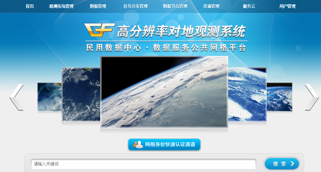
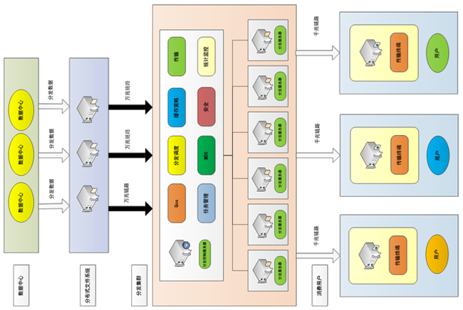
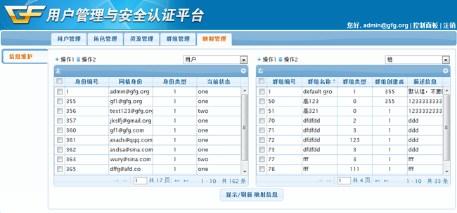

我们的成果
数据服务网格平台面向各种网格资源提供统一寻址、发布注册、搜索发现、集成组合、全局监控、统计分析等功能；面向数据提供综合集成、透明访问、多中心的数据分发调度、多节点的数据分发传输控制与优化等功能；面向用户提供网格身份认证、综合数据搜索、集成数据下载、资源发布订阅等功能，具体包括如下几个方面的功能：
网格门户(PORTAL)
面向用户提供门户服务，主要功能包括：集成搜索门户、资源注册门户、网格监控门户、用户管理门户等用户界面服务。

弹性分发云平台(ZOFLIC)
ZOFLIC是一个高可用、对等式、适应于时空信息特征的弹性云分发平台。
ZOFLIC能够解决跨单位、跨区域、跨系统的数据集成访问问题，通过标准化、统一的数据访问与分发接口屏蔽不同数据中心的数据异构性；通过资源访问重定向技术，实现透明化的远程数据访问；通过分布式的元信息实时聚合与同步和分布式索引技术实现跨多个数据中心的编目数据集成，提供一体化的数据检索、浏览与征订服务。

用户管理与安全平台(UMAS)
用户管理与安全系统（UMAS）是基于国际安全标准规范，自主研发的高可用、高性能、安全可靠的用户管理平台，充分结合行业特性，能够支持国内特有的应用要求。
UMAS具有单点登陆、访问权限控制和虚拟组织管理三大功能，可以实现用户登入的统一管理、用户权限的统一安全认证（验证用户对某种资源所拥有的访问控制权限）和虚拟群组的统一管理。

